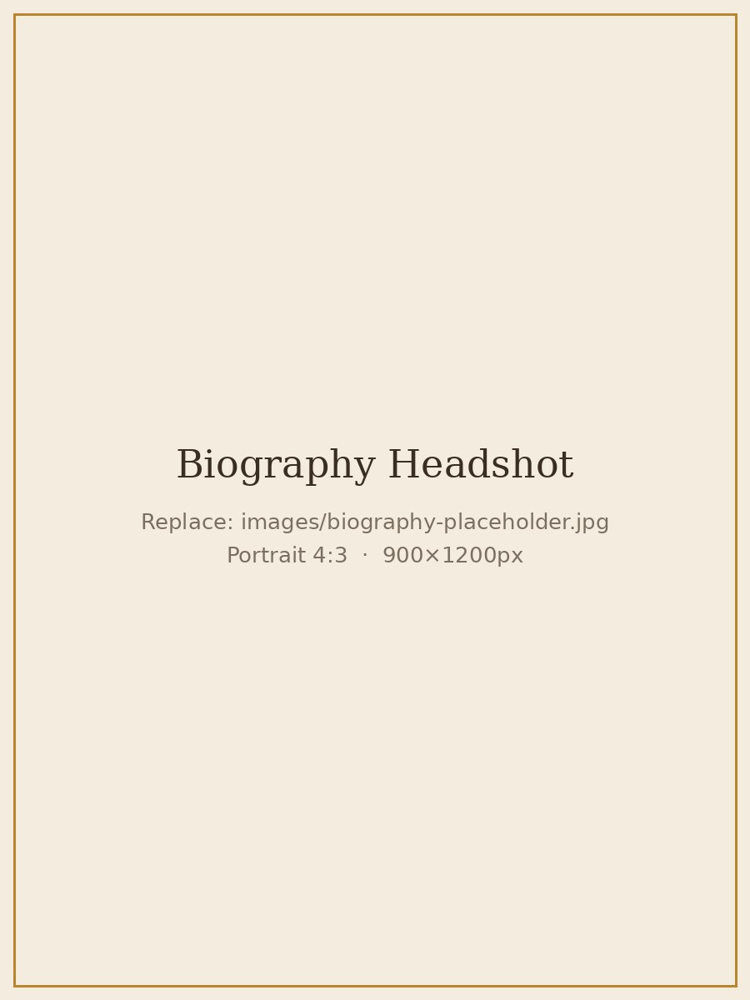

Biography

Harpist Sabrina Savenkova is a graduate of the Guildhall School of Music & Drama, where she studied under Keziah Thomas, and of Chetham's School of Music. She performs widely as an orchestral, chamber, and solo musician in concert halls, churches, and private venues across the country.
Her playing is known for its warmth, poise, and expressive sensitivity, whether in a full orchestral setting or an intimate solo performance. Alongside the core classical repertoire, Sabrina has a particular interest in contemporary and cross-genre work: she regularly premieres new pieces written for the harp, and has collaborated on performances that bring the instrument into dialogue with theatre and poetry.
Sabrina is a versatile performer for weddings, corporate functions, and private celebrations, drawing on a repertoire that spans Classical, Film Music, Jazz, and Contemporary pieces, and she is equally at home teaching, offering private tuition to students preparing for graded examinations, auditions, or simply learning for enjoyment.
Sabrina currently lives in London. You can reach her at E: sabrinasavenkova.harp@gmail.com or M: +44 7305 660 180.